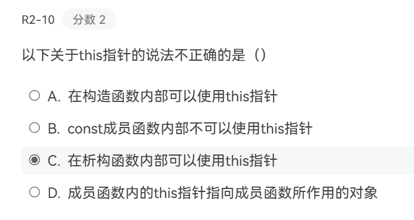

# 一点疑惑
# 1.this 指针 (选 B)

A. 构造函数用于初始化对象，在构造函数中可以使用 this 指针来区分成员变量和局部变量，或者通过 this 指针调用其他成员函数等。例如：
class MyClass { | |
public: | |
int num; | |
MyClass(int num) { | |
this->num = num; // 用于区分时必须明写 this | |
} | |
}; |
B. 此时 this 指针是一个指向常量对象的指针，即 const 类型的指针，不能指向可以被修改的对象
class MyClass {
public:
int num;
void printNum() const {
// this 指针指向常量对象
const MyClass* constThis = this;
// 可以使用 this 指针访问成员变量，但不能修改
std::cout << this->num << std::endl;
}
};
/*在实际使用中，const类型的成员函数依然可以使用this来指向调用它的对象，也可以访问其内容*/
C，D 都是正确的
# 2. 构造 / 析构函数的执行
不放题目就说一下：
构造函数
默认就有普通构造函数和复制构造函数（是浅拷贝，仅仅赋值），它们是重载的
但是，如果自己写了任意一种的构造函数，就不会在默认生成
可以使用
MyClass() = default
来显式指定生成默认的构造函数
另外，const 可以作为构造函数的重载区分，当定义的对象是 const 类型，它才会被自动调用。
析构函数
没有参数，不可重载，都是先入后出（同生存期时，包括对象数组），这是因为后面定义的对象析构时可能访问已销毁的前面的对象，所以这是 C++ 的标准要求的，跟怎么存储没有关系。还有就是，如果堆上的对象不是手动释放，在程序结束后不会调用析构函数，而是被操作系统直接回收。
# 3. 成员函数 & const&static
常成员函数：
属于对象本身，不能通过 this 指针修改调用对象的非常数据成员 ，但是可以使用外部的数据 / 函数
并且可以修改外部数据（除 const 的数据），被调用外部函数也可以修改对象的非常数据成员
稍微复杂一点：
#include <iostream>
class AnotherClass {
public:
void nonConstFunction() {
std::cout << "Non-const function of AnotherClass." << std::endl;
}
void constFunction() const {
std::cout << "Const function of AnotherClass." << std::endl;
}
};
class MyClass {
public:
void constFunction(const AnotherClass& anotherObj, AnotherClass& nonConstAnotherObj) const {
// 可以调用 const 对象的 const 成员函数
anotherObj.constFunction();
// 以下代码会报错，不能调用 const 对象的非 const 成员函数
// anotherObj.nonConstFunction();
// 可以调用非 const 对象的非 const 成员函数
nonConstAnotherObj.nonConstFunction();
}
};
int main() {
AnotherClass obj1;
const AnotherClass obj2;
MyClass myObj;
myObj.constFunction(obj2, obj1);
return 0;
}
//其实也不复杂，就是说如果用了其他对象，那么能否调用其中的函数，看那个对象本身是否可以调用
//但是话又说回来，如果那个对象的方法改变了本来这个对象的非const成员函数，依然是会报错的
//同理，被调用的对象不能调用调用对象的非const成员函数
总之就是：不能改变/使用本身对象里的非const成员（除被声明为mutable的成员数据），其他随意。
静态成员函数：
属于类，也可以通过对象调用，但是没有区别，只能使用静态成员数据 / 函数和外部数据 / 函数
提一下：
1. 静态成员数据不是在构造函数中初始化的（但是构造函数可以使用它），必须在类外以 类名::变量名=xxx 的形式初始化，不过，如果它同时是 const 的话，甚至可以直接在类内就定义（也可以不）
2. 常数据成员只能在构造函数的初始化列表中定义（除了上面那个情况），不能在函数本身或者外部
3.const 对象只能绑定到 const 引用，但是，const 引用可以绑定非 const 对象
所以成员函数应该：
bool operator>(const Complex &other) const{}
//关注前一个const的作用
否则传入 const 对象时会报错。
总之就是：static 类型的属于类本身，但是 const 属于对象，只有同时是 static 和 const 才能类内定义
# 4. 重载
并不是每个可重载的运算符都能以这三种方式重载。例如，赋值运算符 = 、下标运算符 [] 、函数调用运算符 () 和成员访问运算符 -> 只能重载为成员函数。
对于 ++ 运算符的重载，可以只重载一种形式（后置有个 int 作为占位参数）
# 5. 对象与引用
引用是对象的别名，你可以将对象本身当作引用传入或者传出。
也就是说：
CLASS fuction (CLASS& F){...}
cLASS function (CLASS F){...}
都可以用；
CLASS a,b;
b=function(a);
来调用，不需要用CLASS &c=a;b=function(c);这样的表达。
只是前者会达到类似指针的效果，后者单纯传值（这里俩不能重载）
同理：
CLASS function(...){...}
CLASS &fuction(...){...}
都可以用：
return *this;
来返回
前者返回的是副本，需要存在复制构造函数，如果后续是连续操作，会在副本上操作
造成不能连续使用，而前者返回还是原对象的应用，尽管看着还是返回对象（这也就是为什么重载输入输出流时必须是返回引用）
# 各种库
# <iostream>& <iomanip>
主要类
std::istream：用于输入操作的抽象基类。std::ostream：用于输出操作的抽象基类。std::iostream：继承自std::istream和std::ostream，用于同时进行输入和输出操作。std::cin：标准输入流对象，通常与键盘关联。std::cout：标准输出流对象，通常与屏幕关联。std::cerr：标准错误输出流对象，不带缓冲，通常与屏幕关联。std::clog：标准日志流对象，带缓冲，通常与屏幕关联
| 函数 / 操纵符 | 功能 | 实例代码 | 输出结果 |
|---|---|---|---|
std::setw(int n) |
设置字段宽度，为下一次输出指定宽度 | std::cout << std::setw(5) << 42; |
42 |
std::setfill(char) |
设置填充字符（默认是空格） | std::cout << std::setfill('*') << std::setw(5) << 42; |
***42 |
std::left |
设置左对齐 | std::cout << std::left << std::setw(5) << 42; |
42 |
std::right |
设置右对齐 | std::cout << std::right << std::setw(5) << 42; |
42 |
std::internal |
符号靠左，其余靠右 | std::cout << std::internal << std::setw(5) << -42; |
- 42 |
std::setprecision(int) |
设置浮点数的有效位数 | std::cout << std::setprecision(3) << 3.14159; |
3.14 |
std::fixed |
设置定点格式输出浮点数 | std::cout << std::fixed << std::setprecision(2) << 3.14159; |
3.14 |
std::scientific |
设置科学计数法格式输出浮点数 | std::cout << std::scientific << 3.14159; |
3.141590e+00 |
std::hex |
设置整数以 16 进制显示 | std::cout << std::hex << 42; |
2a |
std::oct |
设置整数以 8 进制显示 | std::cout << std::oct << 42; |
52 |
std::dec |
设置整数以 10 进制显示（默认） | std::cout << std::dec << 42; |
42 |
std::showbase |
显示进制前缀（如 0x 表示 16 进制） |
std::cout << std::showbase << std::hex << 42; |
0x2a |
std::noshowbase |
隐藏进制前缀（默认） | std::cout << std::noshowbase << std::hex << 42; |
2a |
std::uppercase |
16 进制字母显示为大写 | std::cout << std::uppercase << std::hex << 42; |
2A |
std::nouppercase |
16 进制字母显示为小写（默认） | std::cout << std::nouppercase << std::hex << 42; |
2a |
std::showpos |
在正数前显示 + 符号 |
std::cout << std::showpos << 42; |
+42 |
std::noshowpos |
不显示正数的 + 符号（默认） |
std::cout << std::noshowpos << 42; |
42 |
std::boolalpha |
布尔值以 true/false 输出 |
std::cout << std::boolalpha << true; |
true |
std::noboolalpha |
布尔值以 1/0 输出（默认） |
std::cout << std::noboolalpha << true; |
1 |
std::setbase(int n) |
设置整数的进制（支持 8、10、16） | std::cout << std::setbase(16) << 42; |
2a |
std::resetiosflags |
重置指定的流状态 | std::cout << std::resetiosflags(std::ios::showbase) << std::hex << 42; |
2a |
std::setiosflags |
设置指定的流状态 | std::cout << std::setiosflags(std::ios::showbase) << std::hex << 42; |
0x2a |
其中比较重要的：
cout<< setfill('*')<<std::left<< setw(10) << number;
//默认空格填充，以及右对齐
cout<<std::fixed<<setprecision(3) << pi;
//默认是科学计数（std::scientific）,这里固定小数点并设置浮点有效位数
cout << std::setiosflags(std::ios::uppercase) << std::hex << 255;
//设置格式标志，在输出十六进制数、科学计数法表示的数等时，其中的字母会以大写形式输出（默认小写）。后续使用std::resetiosflags(std::ios::uppercase)清除。后一个就是输出数字以十六进制
# <string>
-
size()：返回字符串的长度。 -
empty()：检查字符串是否为空。 -
operator[]：通过索引访问字符串中的字符。 -
substr(开始位置索引，长度)：返回子字符串。 -
find(要查找的字符)：查找子字符串在主字符串中的位置，返回索引，没找到是 - 1。改为
rfind就反向寻找。 -
replace(索引,替换字符数，替换字符)：替换字符串中的某些字符。
insert,erase 也都使用，语法和下面那个 vector 一样
[其他见]( C++ 标准库 | 菜鸟教程 )
# <sstream>
处理字符串和数字之间的转换 （可以像处理流一样处理字符串）
主要类
istringstream：用于从字符串中读取数据。ostringstream：用于将数据写入字符串。stringstream：是istringstream和ostringstream的组合，可以同时进行读取和写入操作。
//定义
std::istringstream iss("some data");
std::ostringstream oss;
std::stringstream ss;
//读取数字，读取的类型跟定义的有关，不够则保留原有值
int i;
double d;
iss >> i >> d;
//写入数据，都变成字符串
oss << i << " " << d;
//覆写，返回已有内容（如有参数去覆写，则返回覆写后的）,这里是清空
string a;
a=oss.str("");
# <vector>
用于存储动态大小的数组
序列容器，允许用户在容器的末尾快速地添加或删除元素
// 空的vector
std::vector<int> vec1;
// 长度为5的vector，元素默认初始化
std::vector<int> vec2(5);
// 长度为5的vector，元素值为10
std::vector<int> vec3(5, 10);
// 使用初始化列表初始化
std::vector<int> vec4 = {1, 2, 3, 4};
//添加，访问，数量，清空，检查是否为空（返回bool）
myVector.push_back(10);或者myVector.emplace_back()
//前者是先创建临时匀速，然后复制或移动过去，后者直接尾部构造
int firstElement = myVector[0];
size_t size = myVector.size(); //循环中会用到i<myVector.size()
myVector.clear();
numbers.empty();
其他：
| 函数 | 说明 |
|---|---|
push_back(const T& val) |
在末尾添加元素 |
pop_back() |
删除末尾元素 |
at(size_t pos) |
返回指定位置的元素，带边界检查，会抛异常 |
operator[] |
返回指定位置的元素，不带边界检查 |
front() |
返回第一个元素 |
back() |
返回最后一个元素 |
data() |
返回指向底层数组的指针 |
size() |
返回当前元素数量 |
capacity() |
返回当前分配的容量 |
reserve(size_t n) |
预留至少 n 个元素的存储空间，防止频繁分配 |
resize(size_t n) |
将元素数量调整为 n |
clear() |
清空所有元素 |
insert(iterator pos, val) |
在指定位置插入元素 |
erase(iterator pos) |
删除指定位置的元素 |
begin() / end() |
返回起始 / 结束迭代器（0/n） |
insert(iterator pos, const T& val);
erase(iterator pos);
//pos：一个迭代器，指向容器中要插入/删除元素的位置。
！！！注意是插入到指定位置之前（也就是插入的元素自身占据了那个位置）。
//val：要插入的元素的值。
返回值：返回指向新插入元素的迭代器/指向被删除元素之后元素的迭代器，删最后一个就返回end()。
pos通常是`a.begin/end()+数字`的形式，数字就是索引，当然也可以用上述返回的迭代器操作
//操作后的其他元素会依次移动
就算你用不到那么多功能，也可以当作普通的数组使用
for (int a:vector), 这种语法仍然正确。
同时，它有指针和引用，并且作为参数传递，等同于数组，不会退化（如果不是下面第二种的话），可以当作返回值
modifyVector(vector<int>* vec); | |
也可以 | |
modifyVector(&vec[0], vec.size()); | |
注意一下：容器名不是指针 | |
std::vector<int> createVector() { | |
return vec; | |
} |
# <algorithm>
提供了一组用于操作容器（如普通数组（包括其指针）、向量、列表等）的算法 (楼上那个也行)
基本语法（大多数）：
algorithm_name(container.begin(), container.end(), ...);
//下面迭代器就不解释了
# 1. 排序
//最后一个参数是排序函数，不指定时，基本类型按升序
sort(container.begin(), container.end(), compare_function);
//部分排序，前三个升序（在到end()的范围中，不包含），剩下未定义
partial_sort(vec.begin(), vec.begin() + 3, vec.end());
//稳定排序，当相等时保持原顺序，用于多次排序且要保留上次排序的相对顺序时
stable_sort(vec.begin(), vec.end(), compare_function);
# 2. 搜索
//指向匹配的元素，没有就是end()
auto it = find(container.begin(), container.end(), value);
# 3. 复制
vector<int> source = {1, 2, 3, 4, 5};
int destination[5];
copy(source.begin(), source.end(), destination);
# 4. 比较
bool result = equal(first1, last1, first2, compare_function);
//不包含last，最后那个参数可选，自定义比较规则（函数或 Lambda 表达式），返回bool
//注意对于基本类型参数是指针，其他是迭代器
# 5. 修改
//翻转
std::reverse(vec.begin(), vec.end());
//区间赋值
std::fill(vec.begin(), vec.end(), 0);
//区间替换指定值
std::replace(vec.begin(), vec.end(), 1, 99);
//区域赋值
std::copy(vec.begin(), vec.end(), vec2.begin());
# PS 自定义比较函数
bool compare(int a, int b) {
return a > b;
}
true表示a在b前面，也就是不用换位置，反之亦然。
对齐输入就是ture按原位置，false反之
这里是降序排列